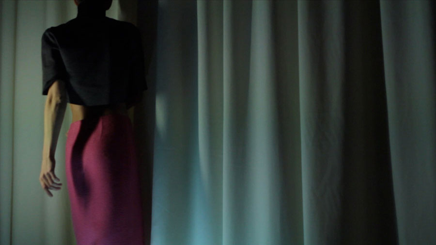

σ – stands for Standard Deviation – is collaborative efforts of Chaos Reigns and Forget Me Not
first collection was womens SS14 capsule. both womens and mens lines are issued on standard industry schedule, except for a deviation that it might not happen every season
we generally aim at simply cut clothing and follow casual functionality standards, yet there are deviating units with a more complex look
SD is frozen at the moment
FB